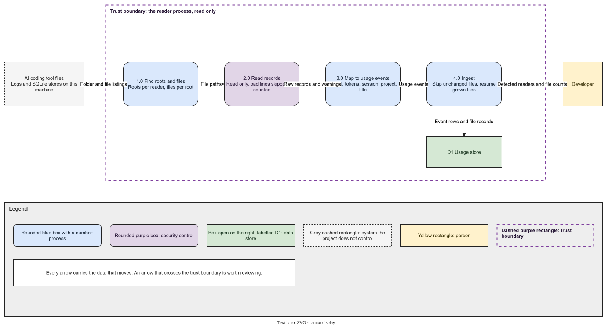

active approved inferred
Readers data flow
This view follows one file from a coding tool through a reader into the usage store. It shows which steps only read, which steps guard against damaged data, and which data reaches the developer. That helps a reviewer confirm the tool never changes the files it measures.
What the diagram shows
- The reader finds roots for its tool and lists the files under each root that exists.
src/ai_usage_cost/sources/base.py:47-49src/ai_usage_cost/sources/base.py:58 - Records are read with helpers that open files for reading only, skip lines that fail to parse and add one warning per file.
src/ai_usage_cost/sources/base.py:69-84src/ai_usage_cost/sources/base.py:87-114 - SQLite stores are opened through a read only URI, and a database error becomes a warning.
src/ai_usage_cost/sources/base.py:117-129 - Each reader maps its records to usage events with a model, tokens, session, project and title.
src/ai_usage_cost/sources/claude_code.py:94-110 - The store skips a file whose modification time, size and parser version are unchanged, and resumes a file that only grew when its reader allows it.
src/ai_usage_cost/store.py:228-231src/ai_usage_cost/store.py:243-251 - The store writes event rows and a file record per parsed file.
src/ai_usage_cost/store.py:262-290 - The pipeline reports each reader with its detected state and file count.
src/ai_usage_cost/pipeline.py:141-163
Capability and related functionality
Realises the reading and ingest steps described in Ai usage cost sources Overview. It complements Readers component view and the controls listed in Ai usage cost sources Security.
Readers data flow

Code references
| Code | What it shows |
|---|---|
src/ai_usage_cost/sources/base.py:47-66 |
Root presence and the scan loop |
src/ai_usage_cost/sources/base.py:69-129 |
Read only record and SQLite helpers |
src/ai_usage_cost/sources/claude_code.py:94-110 |
Event mapping |
src/ai_usage_cost/store.py:218-290 |
Skip, resume and write |
src/ai_usage_cost/pipeline.py:141-163 |
Reader status for the developer |